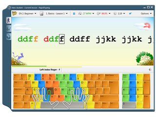

Typing Tutor
We are going to make a Typing Tutor.

1. Make a TypingTutor class with a setup() method and a Runner class with a main method. Create a JFrame, JPanel, and currentLetter as member variables
Make sure the JFrame is visible and set the default close operation.
JFrame frame = new JFrame();
JPanel panel = new JPanel();
char currentLetter;
void setup(){
frame.setVisible(true);
frame.setDefaultCloseOperation(JFrame.EXIT_ON_CLOSE);
}2. Paste the following method after the main method.
char generateRandomLetter() {
Random r = new Random();
return (char) (r.nextInt(26) + 'a');
}
3. Initialize currentLetter in the setup method as shown below:
currentLetter = generateRandomLetter();
4.Create a JLabel and set the text of the label to the currentLetter in the setup method.
5. Format the letter so that it is nice and big. Here are some hints….
label.setFont(label.getFont().deriveFont(28.0f)); label.setHorizontalAlignment(JLabel.CENTER);
6. Add a key listener to the frame in setup method. Add label to the panel and panel to the frame. Then pack the frame.
7. Create object/instance of typingTutor class in main method. Using the object/instance call the setup method as shown below.
public static void main(String[] args){
typingTutor tutor = new typingTutor();
tutor.setup();
}
8. Make the letter change every time a key is pressed. To do that, in the keyReleased method:
i) Reset currentLetter with generateRandomLetter().
ii) Set the text of your JLabel to the new currentLetter.
9. In the keyPressed method, print out the character that the user typed.

10. If they typed the currentLetter, print “correct”.
11. If they typed the correct letter, set the panel background to green. Otherwise set it to red.
panel.setBackground(Color.GREEN);
12. [optional] After a certain number of characters, show the users’ typing speed.
Date timeAtStart = new Date();
private void showTypingSpeed(int numberOfCorrectCharactersTyped) {
Date timeAtEnd = new Date();
long gameDuration = timeAtEnd.getTime() - timeAtStart.getTime();
long gameInSeconds = (gameDuration / 1000) % 60;
double charactersPerSecond = ((double) numberOfCorrectCharactersTyped / (double) gameInSeconds);
int charactersPerMinute = (int) (charactersPerSecond * 60);
JOptionPane.showMessageDialog(null, "Your typing speed is " + charactersPerMinute + " characters per minute.");
}